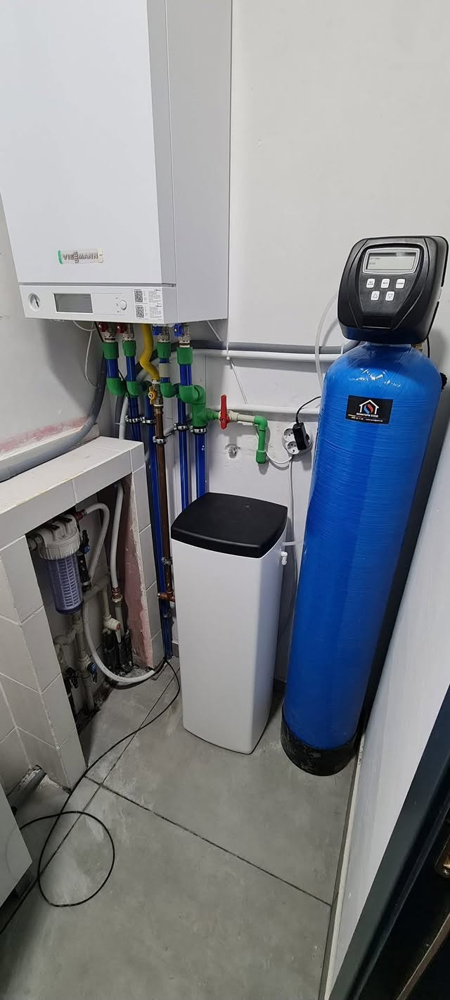
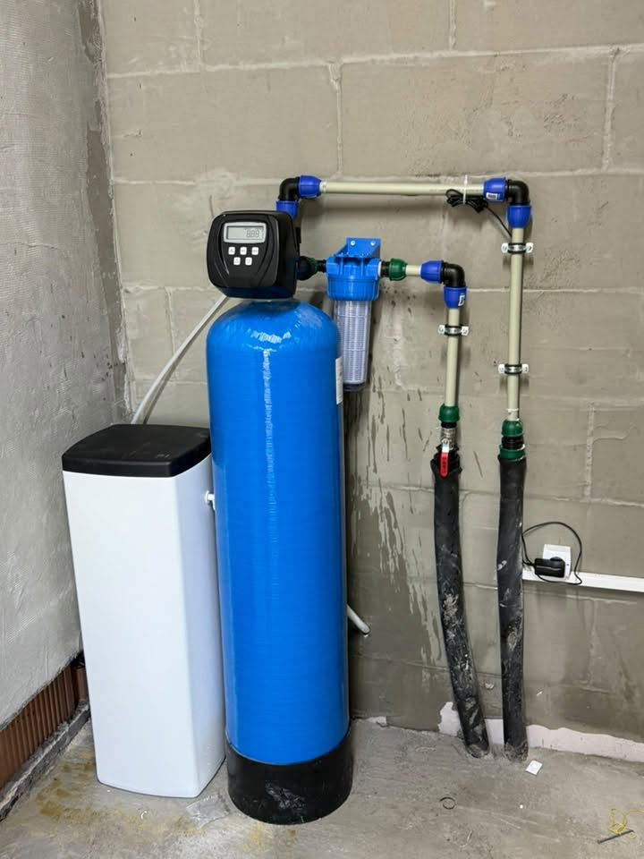
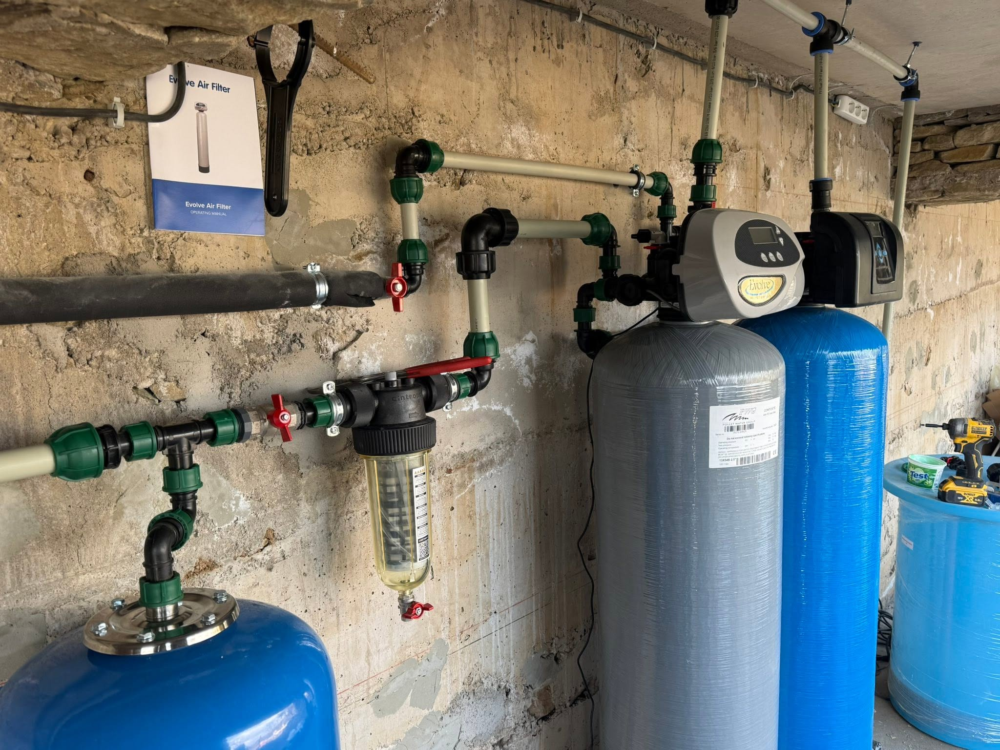
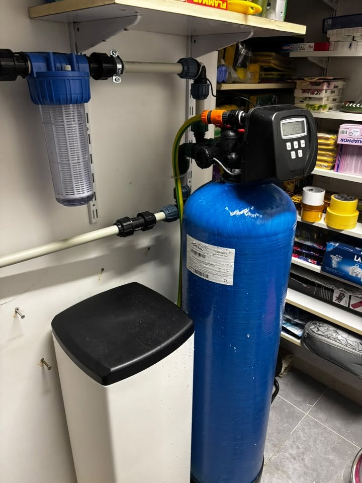

Какво включва омекотителната система
Базата ни е в Костинброд. Работим в София и София област — от оглед и оферта до монтаж и настройка.
Монтираме системи с управляващи глави Clack, предфилтри и солна кутия. Настройваме регенерационните цикли според твърдостта на водата. Особено полезно при газов котел и битова техника.
Монтираме омекотители с глави Clack, предфилтри и солна кутия. Настройваме регенерацията според водата ви.
Особено полезно при газов котел и варовита вода в региона.
- Системи за омекотяване на варовита вода
- Управляващи глави Clack
- Предфилтри и солна кутия
- Настройка на регенерационните цикли
Омекотител — ориентир след оглед
Цената на омекотителната система зависи от твърдостта, консумацията и мястото за монтаж. Оферта след кратко уточнение или оглед — труд и оборудване се разделят ясно.
Какво не е включено / уточняваме честно: Един омекотител не „излекува“ цялата стара водопроводна мрежа от варовик. Казваме честно какво може системата.
От реален обект
Къде монтираме омекотители
Омекотителни системи за варовита вода монтираме в София и София област.
Подробности по населени места ↓
Измерване, монтаж, настройка
Оценка
Твърдост на водата и консумация.
Подбор
Подходяща система и място за монтаж.
Монтаж
Връзки, солна кутия, настройки.
Пускане
Проверка на работата и инструктаж.
Системи на обект



Въпроси за омекотяване
Какъв е ценовият ориентир за омекотител за вода?
Цената на омекотителната система зависи от твърдостта, консумацията и мястото за монтаж. Оферта след кратко уточнение или оглед — труд и оборудване се разделят ясно.
Нужен ли е при газов котел?
При твърда/варовита вода — силно препоръчителен.
Какво е Clack?
Американски производител на управляващи глави за омекотителни системи.
Монтирате ли в Костинброд и Сливница?
Да — и в цяла София област.